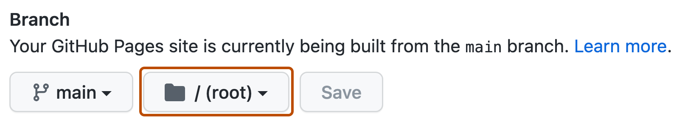

- 1. 準備
- 2. 編集
- 3. 公開
GitHub Pagesで公開・更新する
Codexの変更がGitHubへPushされていることを確認し、GitHub Pagesで研究室サイトを公開します。
GitHubへの反映を確認する
Codexが今回の変更をCommitし、作業branchをGitHubへPushしたことを確認します。
- Commit（コミット）
- 選んだ変更内容を、一つの記録としてパソコン上に保存することです。
- Push（プッシュ）
- パソコン上のCommitをGitHubへ送ることです。
-
Codexの最終報告で、commit hashとpush先が自分のリポジトリと作業branchに対応していることを確認します。
-
必要な場合はGitHub DesktopでHistoryを開き、今回のCommitを確認します。未コミット変更が残っていないかはChangesで確認できます。
-
CommitだけでPushされていない場合は、GitHub上のリポジトリへ変更が反映されていません。
GitHub Pagesで公開する
GitHub上の自分のリポジトリを、ホームページとして公開します。
ブラウザで、テンプレートから作成した自分のリポジトリを開きます。
リポジトリのSettingsを開きます。見当たらない場合は、リポジトリ上部の追加メニューも確認します。
Settings内のPagesを開きます。
Build and deploymentのSourceで、Deploy from a branchを選びます。
-
公開元のbranchにmain、フォルダに/(root)を選び、Saveを押します。


GitHub Docsの公式画像：公開元のbranchでmain、folderで/(root)を選びます。 設定を保存します。
公開処理が完了するまで待ちます。初回は表示まで数分かかる場合があります。
-
Pagesに表示された公開URLを開き、文字や画像が正しく表示されるか確認します。
公開後に更新する
ここからは初回公開後の日常更新です。最初に作った同じローカルリポジトリを使います。
同じローカルリポジトリをCodexで開きます。
変更したい内容を具体的に依頼します。詳しい依頼方法はCodexで編集するを参照してください。
変更後の表示と、氏名や研究内容などの事実を確認します。
Commit・Pushの完了と、push先を確認します。
公開ページを再読み込みし、更新が反映されたことを確認します。